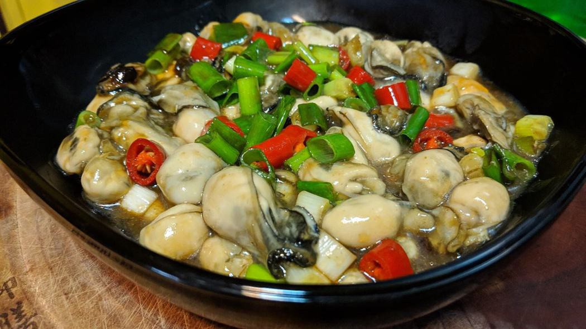
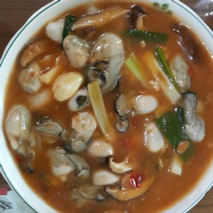
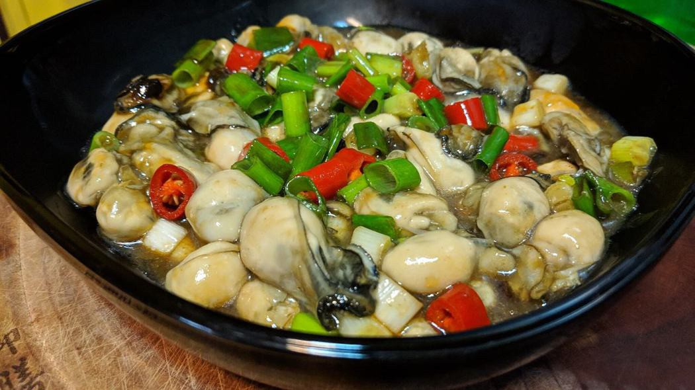
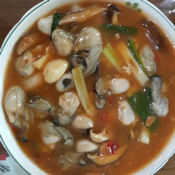
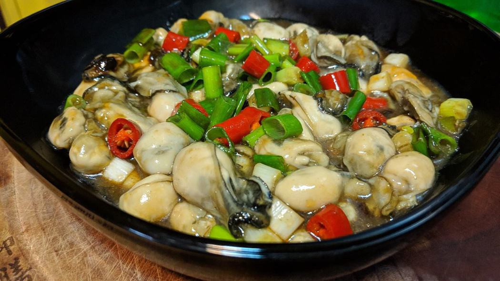
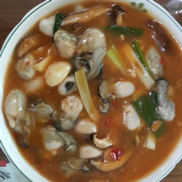
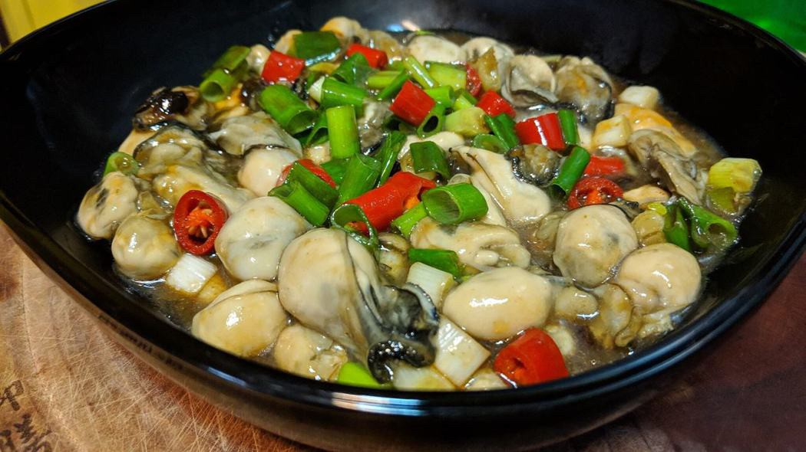
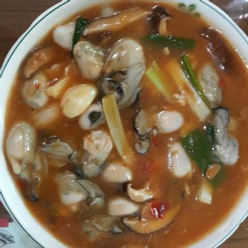
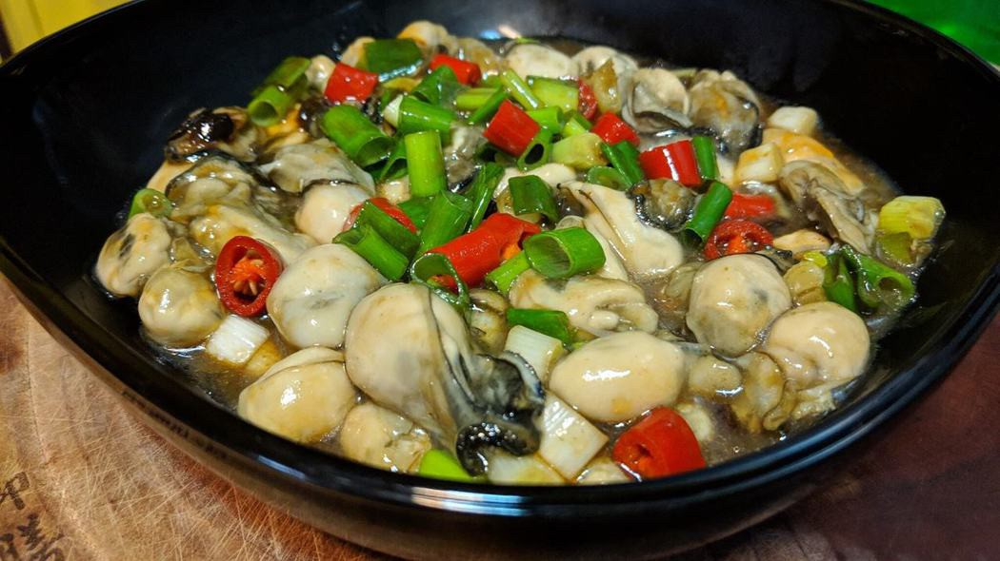
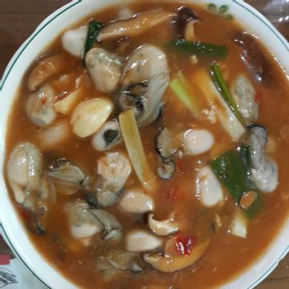

2. 備一鍋水開大火加熱，水沸騰後放入鮮蚵燙30秒盛起備用
3. 冷鍋開中火加入1大湯匙的油，油熱後加入蔥白、蒜頭、薑及辣椒爆香30秒
4. 加入所有調味料及豆腐煮滾後蓋上鍋蓋煮5分鐘
5. 加入鮮蚵攪拌一下再加入太白粉水勾芡至自己喜歡的稠度並撒上蔥綠即可收工
 
鳳梨蝦球介紹 鐵板豆腐介紹 塔香蛤蜊介紹 心得
練習 影片 音樂
Your browser does not support the audio element. Your browser does not support the video tag.
 






